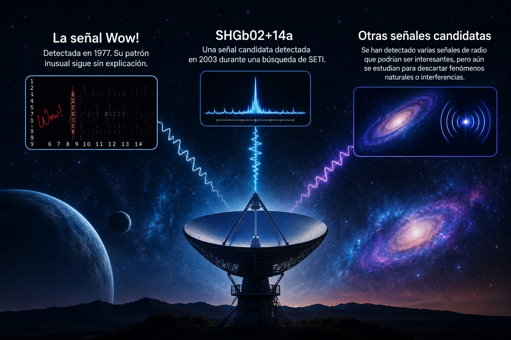

El universo guarda señales misteriosas que han intrigado a los científicos durante años. En esta página conocerás algunas de las más famosas, las investigaciones realizadas y las teorías sobre su posible origen.
TE INTERESA O QUIERES SABER MÁS DEL TEMA?
QUE TEMA TE INTERESA CONOCER?
